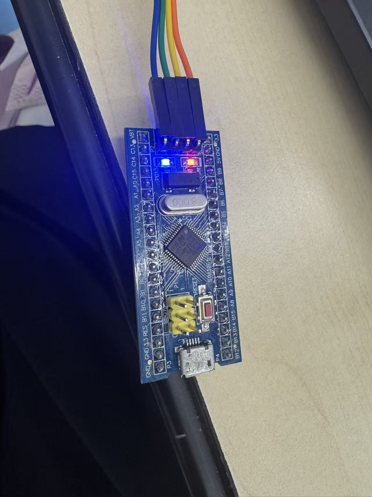
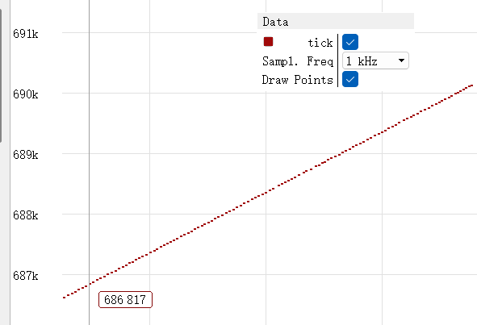
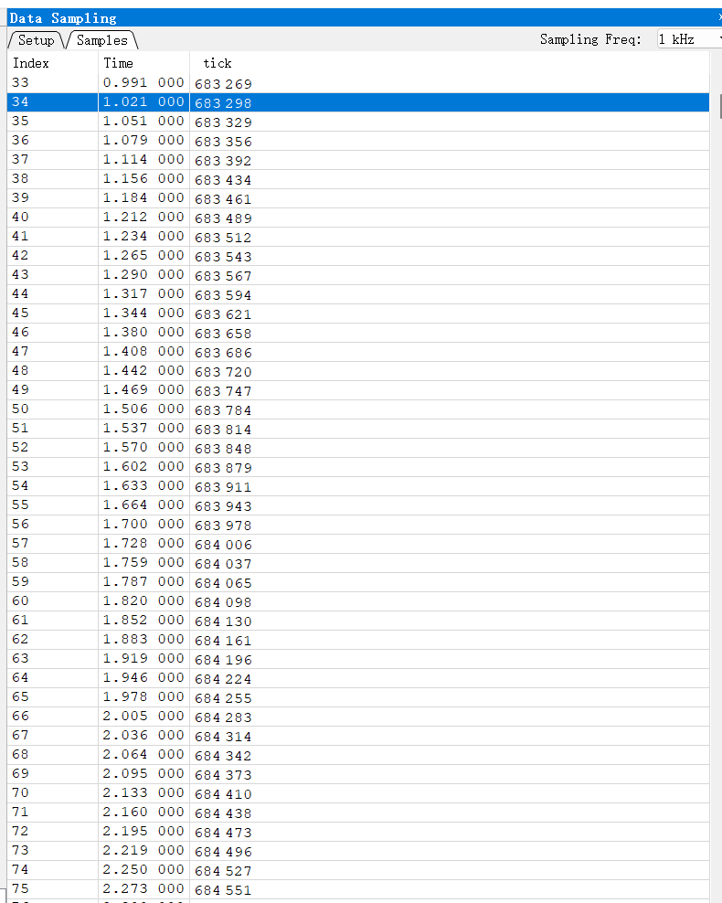
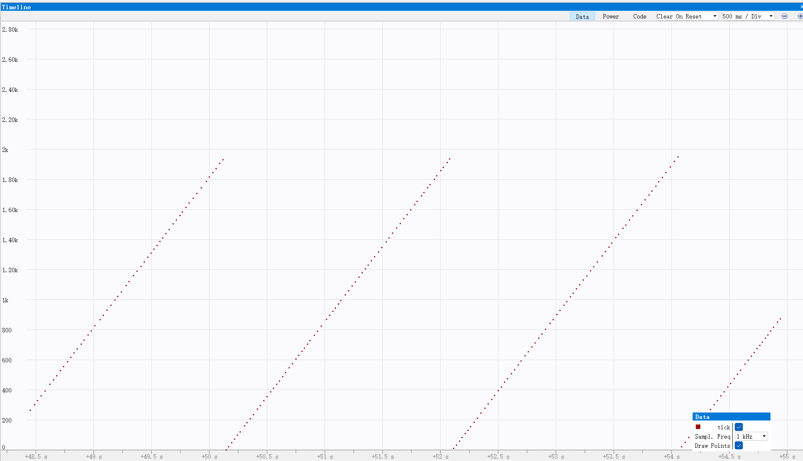

| 开发板 | STM32F103C8T6 最小系统板 | 芯片型号 | STM32F103C8Tx |
| 系统主频 | 72 MHz | 定时器 | TIM2（APB1，1 ms 更新中断） |
| 看门狗 | IWDG，分频 64，Reload 1249，约 2 s | 调试器 | DAPLink（CMSIS-DAP）+ Ozone V3.26 |
三题做在同一个 CubeMX 工程里，业务代码只写在 Tasks/ 下。
first_CMake/ ├─ Core/ # CubeMX 生成，只改 main.c 的 USER CODE 区 │ ├─ Inc/ main.h stm32f1xx_hal_conf.h stm32f1xx_it.h │ └─ Src/ main.c stm32f1xx_it.c stm32f1xx_hal_msp.c system_stm32f1xx.c ... ├─ Drivers/ # STM32F1 HAL + CMSIS，不修改 ├─ cmake/ # CubeMX 生成的 CMake 配置 ├─ Tasks/ # ★ 业务代码只在这里 │ ├─ inc/main_task.hpp │ └─ src/main_task.cpp ├─ CMakeLists.txt # 发放模板，user_folders 保持 "Tasks" └─ build/ # 构建输出，含 project.elf
main.c 只在 USER CODE 区包含头文件并调用 MainInit()，while(1) 保持为空。全局变量 tick、定时器更新回调、GPIO 电平全部写在 Tasks 里。
HSE 8 MHz ──► PLL ×9 ──► SYSCLK = 72 MHz ──► AHB /1 ──► HCLK = 72 MHz
├─ APB1 /2 ──► PCLK1 = 36 MHz
│ └─ APB1 Timer clocks = 72 MHz ← TIM2 用这个
└─ APB2 /1 ──► PCLK2 = 72 MHz
关键点：TIM2 挂在 APB1 上；当 APB1 的分频系数 不为 1 时，送到定时器的时钟是 APB1 的 2 倍：f_TIM2 = 2 × 36 MHz = 72 MHz。
这个 72 MHz 就是后面计算 PSC、ARR 所用的定时器时钟（以 CubeMX 时钟树显示的 “APB1 Timer clocks” 为准）。
MainInit() 里把它写成低电平（不在 while(1) 里翻转）。void MainInit(void)
{
/* 低电平点亮板载 LED */
HAL_GPIO_WritePin(GPIOC, GPIO_PIN_13, GPIO_PIN_RESET);
...
}
现象：板载 LED 常亮（见附录 图 1）。
TIM2 的更新中断周期：
要求 T_up = 1 ms，f_TIM2 = 72 MHz，则：
取整数分频 PSC + 1 = 72，则：
代入验算：
CubeMX 中设置：TIM2 → Prescaler = 71，Counter Period = 999，并在 NVIC 里使能 TIM2 global interrupt。
按题目要求，变量名必须叫 tick，类型为全局 volatile uint32_t：
extern "C" {
volatile uint32_t tick = 0;
}
volatile 防止编译器把自增优化掉；用 extern "C" 保证导出符号名就是 tick，Ozone 里可直接按名字监视。
extern "C" void HAL_TIM_PeriodElapsedCallback(TIM_HandleTypeDef *htim)
{
if (htim->Instance == TIM2) {
tick = tick + 1; /* 每 1 ms 加 1 → 约 1000/s */
/* 第 2 题：喂狗（第 3 题时注释掉） */
HAL_IWDG_Refresh(&hiwdg);
}
}
用 C++ 写回调必须加 extern "C"，否则覆盖不了 HAL 的弱符号；回调只保留这一份；没有用 HAL_Delay 或空循环去加 tick。
void MainInit(void)
{
HAL_GPIO_WritePin(GPIOC, GPIO_PIN_13, GPIO_PIN_RESET);
HAL_TIM_Base_Start_IT(&htim2); /* 启动 1ms 更新中断 */
}
现象：Ozone 运行态下，tick 每秒约增加 1000（见附录 图 2）。
IWDG 由 LSI（内部低速时钟）驱动，F103 的 LSI 约 40 kHz。超时时间：
取分频系数 = 64、Reload = 1249：
CubeMX 设置：Prescaler = IWDG_PRESCALER_64，Reload = 1249，超时约 2 s。
现象：tick 呈锯齿状，涨到约 2000 后归零、循环（见附录 图 3）。
| 题 | 外设/变量 | 配置 | 现象 |
|---|---|---|---|
| 1 GPIO | PC13 | 推挽输出，写低电平 | 板载 LED 常亮 |
| 2 定时器 | TIM2 | PSC=71, ARR=999 → 1 ms；回调 tick++ + 喂狗 | tick 约 1000/s |
| 3 看门狗 | IWDG | 分频 64, Reload 1249 → 2 s；回调去掉喂狗 | tick 涨到约 2000 后归零 |
说明文档只在附录放图。

图 1 板载 LED 常亮

图 2-1 tick 采样数据（Time 与 tick）

图 2-2 tick 随时间上升的曲线（约 1000/s）

图 3 tick 锯齿状：涨到约 2000 后归零